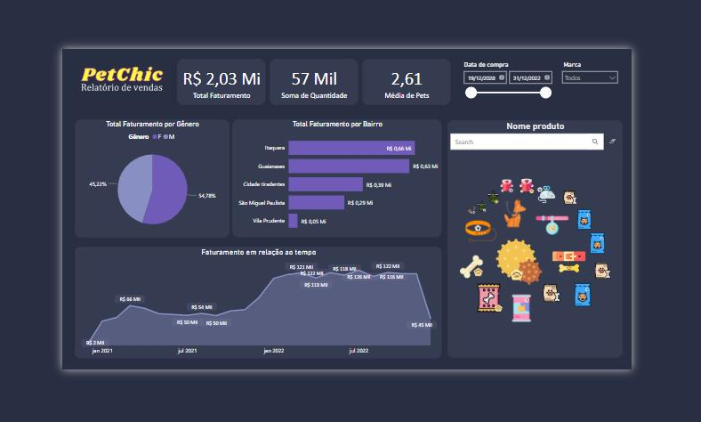

Descrição: Uma simulação interativa de uma máquina de café, criada em Python. Permite aos usuários escolher diferentes tipos de café e personalizá-los. O projeto demonstra habilidades de programação e controle de recursos. Este projeto é inspirado na JetBrains Academy.
class CoffeeMachine:
def __init__(self):
self.water = 400 # Initial amount of water
self.milk = 540 # Initial amount of milk
self.beans = 120 # Initial amount of coffee beans
self.cups = 9 # Initial number of disposable cups
self.money = 550 # Initial amount of money
self.water_required = 0 # Variables to store the requirements for a coffee type
self.milk_required = 0
self.beans_required = 0
self.cost = 0
def inventory(self):
print(f"""\nThe coffee machine has:
{self.water} ml of water
{self.milk} ml of milk
{self.beans} g of coffee beans
{self.cups} disposable cups
${self.money} of money\n""")
def buy(self, choice):
if choice == "1":
self.water_required = 250
self.milk_required = 0
self.beans_required = 16
self.cost = 4
elif choice == "2":
self.water_required = 350
self.milk_required = 75
self.beans_required = 20
self.cost = 7
elif choice == "3":
self.water_required = 200
self.milk_required = 100
self.beans_required = 12
self.cost = 6
elif choice == "back":
return
if (
self.water >= self.water_required
and self.milk >= self.milk_required
and self.beans >= self.beans_required
and self.cups >= 1
):
print("I have enough resources, making you a coffee!\n")
self.water -= self.water_required
self.milk -= self.milk_required
self.beans -= self.beans_required
self.cups -= 1
self.money += self.cost
else:
if self.water < self.water_required:
print("Sorry, not enough water!\n")
elif self.milk < self.milk_required:
print("Sorry, not enough milk!\n")
elif self.beans < self.beans_required:
print("Sorry, not enough coffee beans!\n")
else:
print("Sorry, not enough disposable cups!\n")
def fill(self, water, milk, beans, cups):
self.water += water
self.milk += milk
self.beans += beans
self.cups += cups
def take(self):
print(f"I gave you ${self.money}\n")
self.money = 0
def interact(self):
while True:
action = input("Write action (buy, fill, take, remaining, exit):\n> ")
print()
if action == "buy":
choice = input("What do you want to buy? 1 - espresso, 2 - latte, 3 - cappuccino:\n> ")
self.buy(choice)
elif action == "fill":
water_added = int(input("Write how many ml of water you want to add:\n> "))
milk_added = int(input("Write how many ml of milk you want to add:\n> "))
beans_added = int(input("Write how many grams of coffee beans you want to add:\n> "))
cups_added = int(input("Write how many disposable cups you want to add:\n> "))
self.fill(water_added, milk_added, beans_added, cups_added)
elif action == "take":
self.take()
elif action == "remaining":
self.inventory()
else:
break
coffee_machine = CoffeeMachine()
coffee_machine.interact()
Descrição: Um script Python que simplifica a divisão justa das despesas em festas. Os recursos incluem entrada interativa, sorteio de um amigo "sortudo" que não precisa pagar, e cálculos que dividem a conta de forma igual para todos os participantes. Este projeto é inspirado na JetBrains Academy.
import random
dict_length = int(input("Enter the number of friends joining (including you):\n"))
if dict_length <= 0:
print("\nNo one is joining for the party")
else:
print("Enter the name of every friend (including you), each on a new line:")
friends = [input("> ") for _ in range(dict_length)]
bill_value = float(input("Enter the total bill value:\n"))
lucky = input('Do you want to use the "Who is lucky?" feature? Write Yes/No:\n')
if lucky.lower() == "yes":
lucky_friend = random.choice(friends)
print(f"{lucky_friend} is the lucky one!")
friends_dict = {friend: 0 for friend in friends}
remaining_bill = bill_value - friends_dict[lucky_friend]
split_value = round(remaining_bill / (dict_length - 1), 2)
for friend in friends_dict:
if friend != lucky_friend:
friends_dict[friend] = split_value
else:
friends_dict = {friend: round(bill_value / dict_length, 2) for friend in friends}
print("No one is going to be lucky")
print(friends_dict)
Descrição: Desenvolvimento de um relatório de vendas dinâmico usando o Microsoft Power BI para a empresa fictícia "PetChic PetShop". O projeto envolveu a transformação de dados brutos em informações valiosas. Para acessa-lo basta clicar na imagem. Este projeto é inspirado na ALURA
Descrição: Este projeto é uma aplicação web desenvolvida em Flask que permite aos usuários explorar a "Astronomy Picture of the Day" (APOD) da NASA. Os usuários podem ver imagens e descrições das descobertas astronômicas mais recentes da NASA. É uma fusão de programação web, ciência e astronomia para entusiastas do espaço.